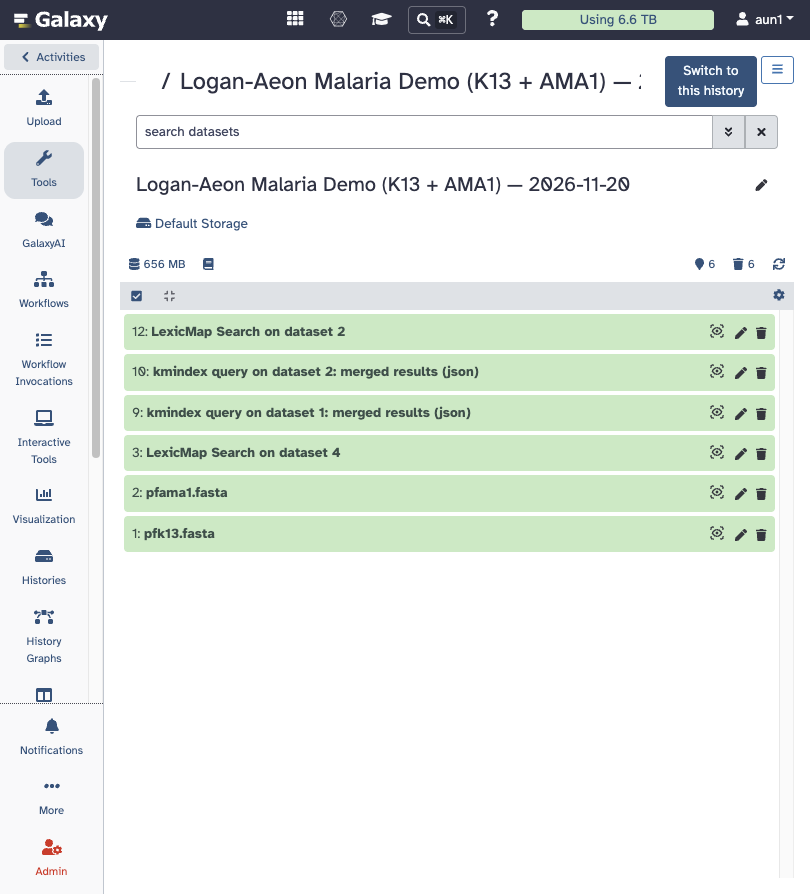
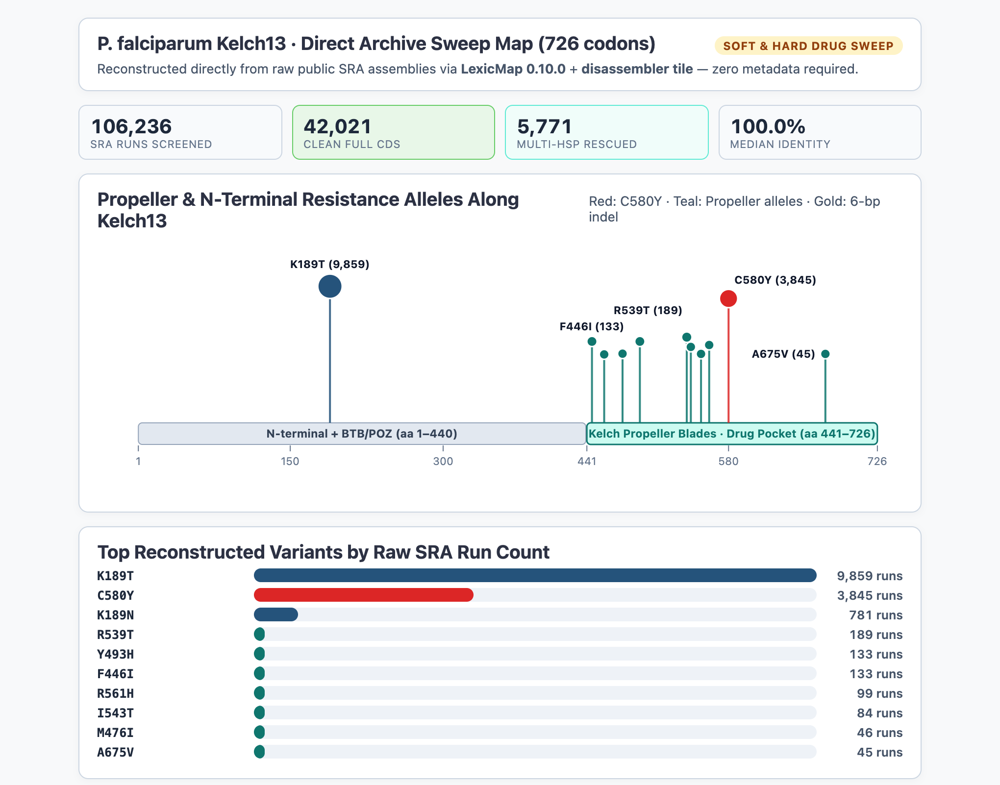
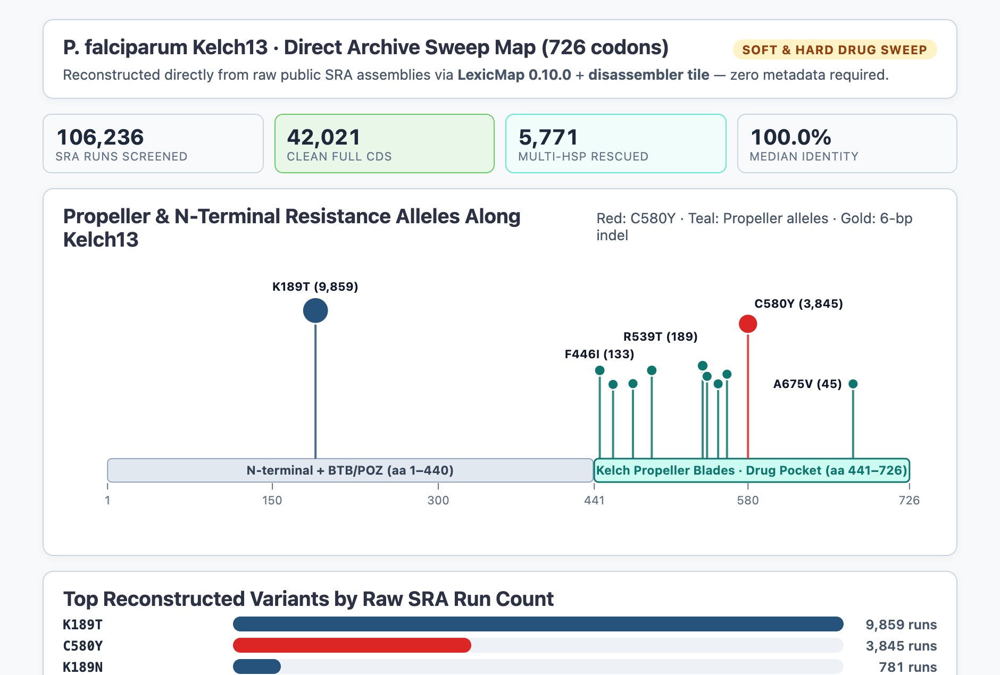
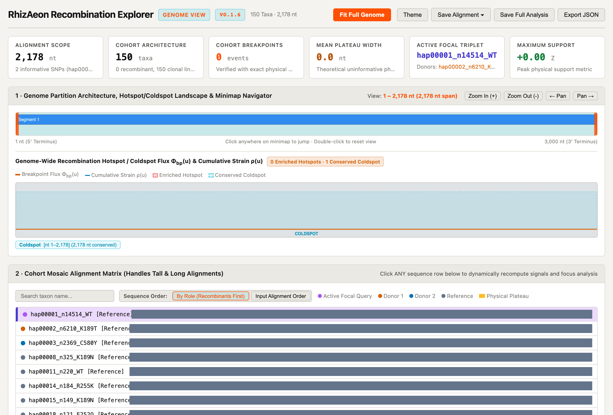
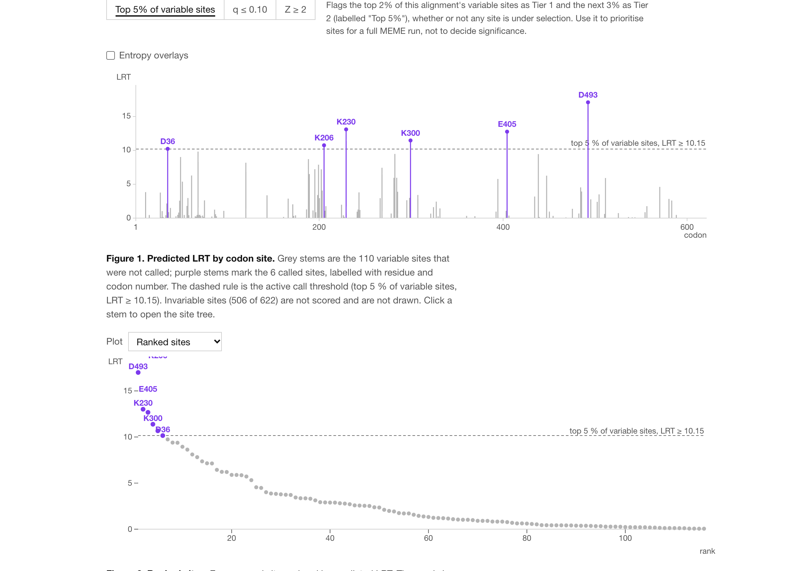
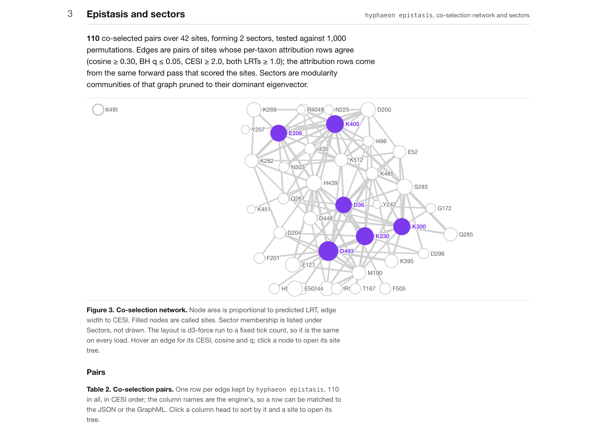
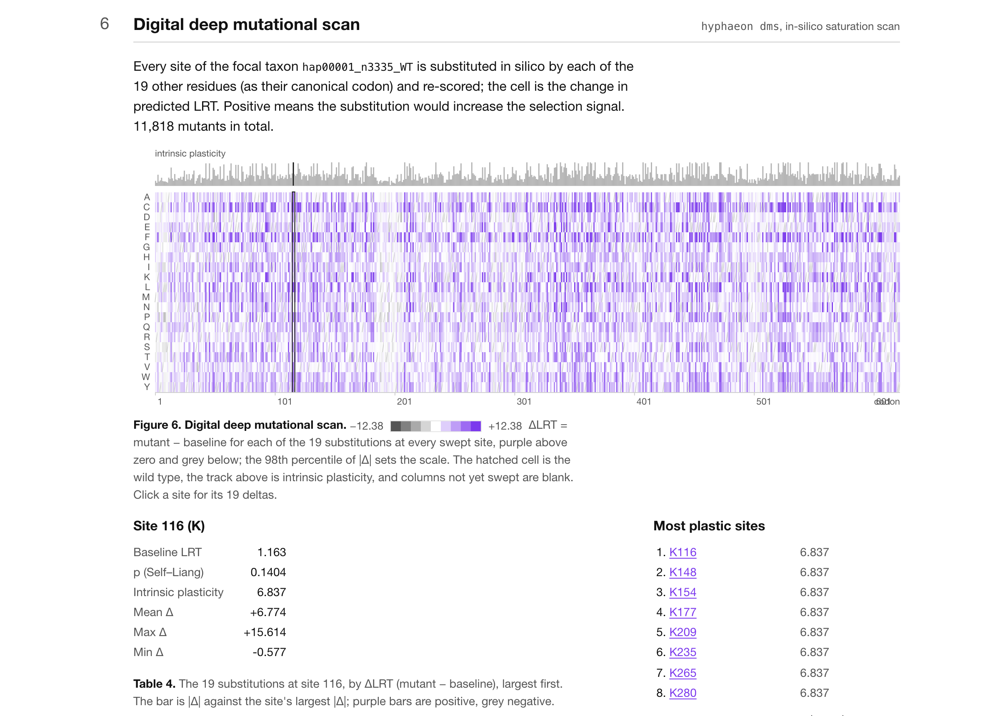
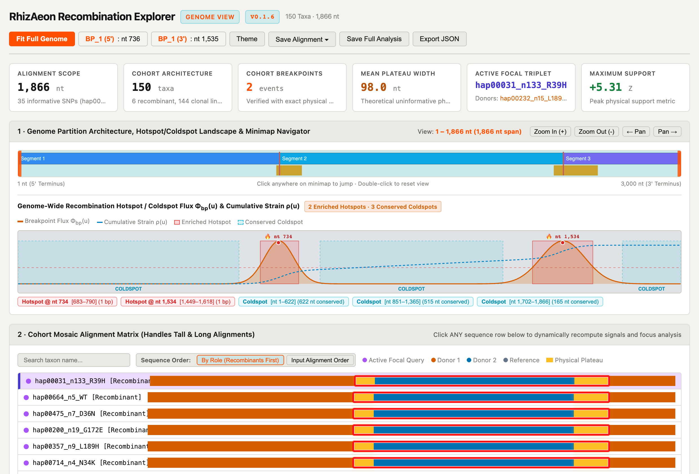
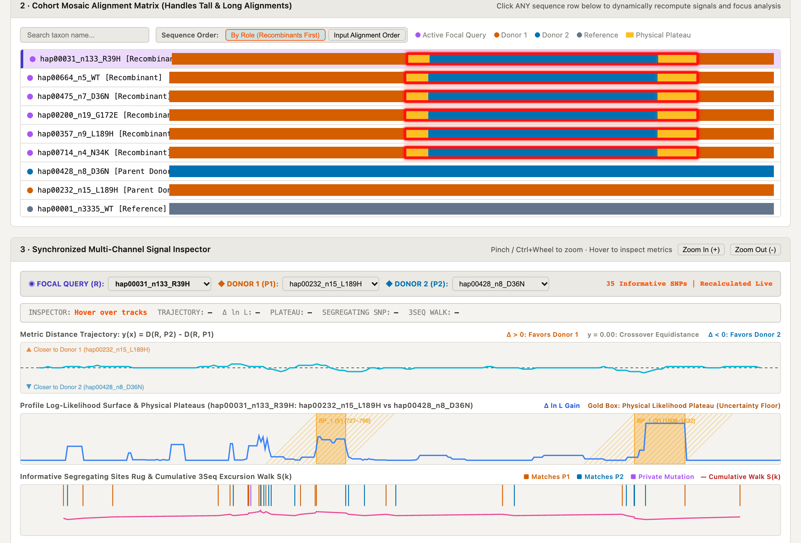
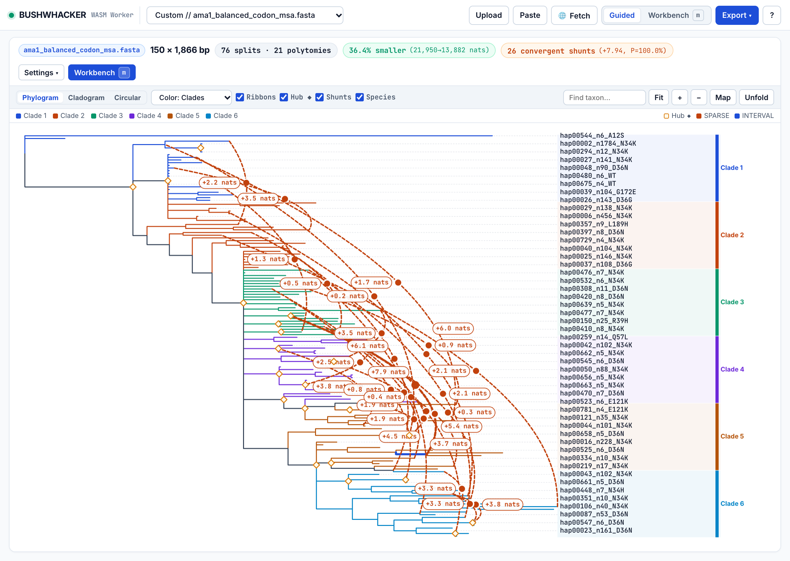

34.5% wild-type, recent propeller drug-resistance alleles (C580Y, R539T, F446I), and zero intragenic recombination.
Balancing selection holds wild-type to 8.9%, lighting up episodic selection, 110 epistasis pairs, and verified mosaic recombination.
Zero metadata filtering, zero local bioinformatics installs, and zero black boxes — every output below ran live through the exact same Galaxy workflow and browser WASM apps.

Connect Orbit, Claude Code, Codex CLI, or Antigravity — browse curated BRC genomes and launch real cloud jobs on usegalaxy.org.
When a brand-new container (disassembler, RhizAeon) isn't installed yet, the agent authors a short YAML User-Defined Tool and runs it immediately in your history.
Every step executes as a tracked Galaxy job — then exports a clean reusable workflow anyone at ASTMH can re-run with one click.

Drop two reference FASTAs into Galaxy and query all 38.1 million SRA runs (86.6 Pb raw reads) by sequence content — bypassing broken submitter metadata.
106,236 via LexicMap (162,947 contig hits)
63,930 via LexicMap (84,291 contig hits)
kmindex screens unitigs in minutes for conserved genes; LexicMap aligns contigs directly — rescuing tens of thousands of divergent immune-evasion hits where SNPs break exact 31-mers.
Our self-contained Galaxy workflow bundles three custom BioContainer UDTs — turning raw LexicMap hit tables into stop-free codon alignments and interactive recombination reports in <2 minutes of compute.

Reconstructed straight from raw SRA assemblies with 100.0% median identity — zero curated metadata required.
Multi-hit contig stitching recovers thousands of split assemblies while cleanly quarantining 148 premature stops & 309 frameshifts.
8,321 unique haplotypes, but wild-type alone accounts for 34.5% (14,514 runs) — hallmark of a recent selective sweep.

K189T (9,859 runs) & K189N (781) dominate outside the propeller — common African polymorphism, not artemisinin resistance.
C580Y (3,845 runs) towers above the propeller blades — the signature Southeast Asian hard sweep recovered directly from raw reads.
R539T (189), Y493H (133), F446I (133), R561H (99), I543T (84), M476I (46), A675V (45), P553L (45).

Across 150 balanced Kelch13 haplotypes (2,178 nt), RhizAeon reports 0 recombination events — one continuous conserved coldspot.
Clinical Kelch13 drug-resistance haplotypes sit just 1–2 SNPs from wild-type (K189T, C580Y) — evolving clonally over a ~15-year sweep.
Feed P. falciparum AMA1 through the exact same Galaxy workflow and watch every evolutionary detector light up.
| Live Galaxy Workflow Metric | P. falciparum Kelch13 (Drug Sweep) | P. falciparum AMA1 (Immune Evasion) |
|---|---|---|
| SRA Runs Screened (LexicMap) | 106,236 runs (162,947 hits) | 63,930 runs (84,291 hits) |
| Clean Full-Length CDS (+ Rescued) | 42,021 full CDS (+ 5,771 multi-hit rescued) | 37,576 full CDS (+ 6,636 multi-hit rescued) |
| Unique Clean Haplotypes & Entropy | 8,321 haplotypes · H = 6.58 bits | 11,458 haplotypes · H = 10.19 bits |
| Wild-Type Frequency | 34.5% (14,514 runs — recent sweep) | 8.9% (3,335 runs — balancing selection) |
| Galaxy Stop-Free Codon MSA | 150 × 726 codons (330 KB) · 26 s | 150 × 622 codons (283 KB) · 25 s |
| Galaxy RhizAeon Verdict | Non-recombinant (H0) · 0 events · 0.47 s | Mosaic Recombinant · 2 breakpoints (+5.31 Z) · 5.4 s |
Drop Galaxy's stop-free AMA1 alignment (150 taxa × 622 codons, 283 KB) straight into PrimAeon and BUSHWHACKER in Chrome — zero upload, zero install, local WebAssembly compute.

Tree-free neural surrogate scores all 116 variable codons locally in the browser — confirming strong episodic selection across AMA1.
Top 5% threshold (LRT ≥ 10.15) calls D36, K206, K230, K300, E405, D493 — cleanly separated on the scree elbow below.
K206, K230, K300 map onto Domain I antigenic-escape loops around the hydrophobic trough; E405 (DII) & D493 (DIII) mark distal antibody targets.

Scroll down one screen: PrimAeon maps 110 significant co-selection edges across 42 sites (BH q ≤ 0.05, CESI ≥ 2.0).
Top ranked edges bridge structural domains: S283↔K300, D200↔K405, E206↔K405 (DI↔DII), and K485↔D493 (DIII).
AMA1 cannot mutate surface loops freely without disturbing the RON2-binding cleft — epistatic partner mutations stabilize escape alleles.

Every wild-type AMA1 residue is substituted in silico to all 19 alternate amino acids — measuring ΔLRT and intrinsic plasticity across the entire protein.
Bright purple tracks mark structurally plastic surface sites free to escape immunity; pale/grey spans mark locked core & disulfide anchors.
Click any column to inspect all 19 mutant effects — pinpointing evolutionarily constrained epitopes hardest for the parasite to escape.

Same Galaxy UDT detects 2 verified cohort breakpoints (p = 2.88×10−8) across 6 mosaic recombinants & 144 clonal lineages.
nt 736 (aa 245) splits inside Domain I right past escape loop c1L; nt 1,535 (aa 511) sits inside Domain III upstream of the conserved C-terminal tail.
Recovers the high intragenic recombination & epitope mosaicism shown by Polley & Conway (2001) and Takala et al. (2009) directly from raw SRA.

Orange flanks match Donor 1 (L189H backbone, d = 0.001); the 800-nt blue interior tract jumps cleanly to Donor 2 (D36N lineage, d = 0.009).
Gold shaded bands (nt 727–799 & nt 1,508–1,632) show the exact uninformative-SNP uncertainty floor around each breakpoint.
Bottom segregating-site rug colors every SNP orange (matches P1) vs. blue (matches P2) — full visual verification in one click.

Red dashed cross-clade arcs rescue 36.4% compression gain (21,950 → 13,882 nats) across 6 clades, 76 splits, and 21 polytomies.
Strongest shunt (+7.94 nats, P = 99.96%) connects distant clades specifically at codons 173, 199, 207, 228 — squarely inside the Domain I immune-escape loop.
BUSHWHACKER keeps honest polytomies and peels reticulate shunts explicitly — revealing horizontal sharing in 155 milliseconds.
Drop a gene sequence into Galaxy, run one workflow, and move from planetary raw reads to resistance sweeps, epistasis networks, Digital DMS, and mosaic recombination proof before your coffee cools.
Every component in this walkthrough is open-source and live now — scan below to connect your AI agent, request UDT beta access, query Logan, or run WASM tools in your browser.
6 AI harnesses + MCP


brc-analytics.org · usegalaxy.org · veg.github.io/primaeon · veg.github.io/bushwhacker
ASTMH 2026